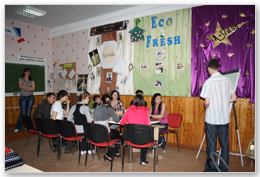
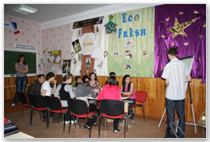

Colegiul de Informatica este cel mai prestigios colegiu din Republica Moldova şi doreşte să se califice printre primele instituţii de învăţămînt mediu de specialitate din Europa, prin conţinutul şi modernitatea procesului de învăţămînt, dinamismul inovării, implicarea în raporturi strategice de parteneriat cu mediul economic şi social, naţional şi internaţional. Colectivul profesoral asigură cele mai mari calităţi a procesului de predare cu racordarea normei didactice la normele europene.
 
